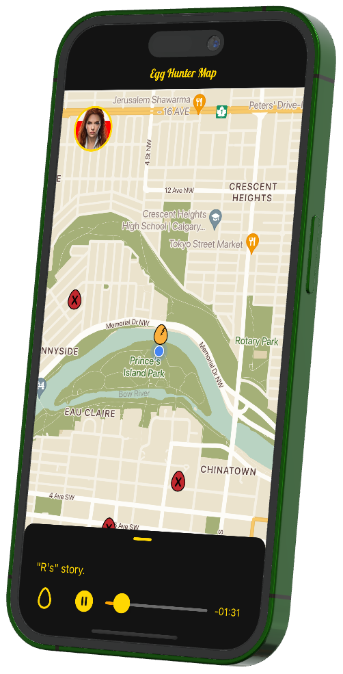

Connecting Calgarians to our Multi-Culture
Egg Hunter YYC is a fun, interactive way for users to connect with our physical city and learn more about our own culture, history and future. The app also paves the way for the city’s different cultural organizations, as well as artists, changemakers and truth-tellers from diverse backgrounds, to share their work, amplifying their voice and impact in our city. Egg Hunter YYC is a mobile application which utilizes a user’s location to orient them towards zones, filled with virtual “eggs” to discover and unlock. These caches of information can include audio, visual or even augmented-reality content from local content-creators.
